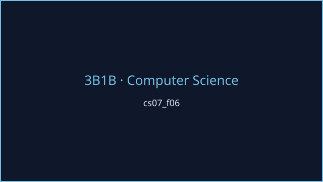

ক্রিপ্টোগ্রাফিতে ''২৫৬-বিট নিরাপত্তা'' বলা হয় যখন কোনো কী ভাঙতে গড়ে $2^{256}$টি চেষ্টা লাগে। সংখ্যাটি লেখা সহজ, কিন্তু এর আকার বোঝা কঠিন।
$2^{256}$ আসলে কত বড়? একে কোনো দৈনন্দিন সংখ্যার সাথে তুলনা করা যায় কি?
প্রতি এক বিট বাড়লে সংখ্যা দ্বিগুণ হয়। ১০ বিটে ১০২৪, ২০ বিটে প্রায় ১০ লাখ, ৩০ বিটে প্রায় ১০ কোটি। ২৫৬ বিটে পৌঁছে সংখ্যা হয় প্রায় $1.16\times10^{77}$।
এই সংখ্যাটি লিখতে ৭৮টি অঙ্ক লাগে—একটি ''গুগল'' ($\,10^{100}$) এর চেয়ে ছোট হলেও কল্পনার বাইরে।
পর্যবেক্ষিত মহাবিশ্বে পরমাণুর সংখ্যা প্রায় $10^{80}$। অর্থাৎ $2^{256}$ পরমাণুর সংখ্যার কাছাকাছি—প্রতিটি পরমাণুকে একটি করে ''গেস'' দিলেও সব গেস শেষ হয় না।
ধরা যাক বিশ্বের সব কম্পিউটার মিলে প্রতি সেকেন্ডে $10^{18}$টি চেষ্টা করে। তবুও $2^{256}$টি চেষ্টা করতে লাগবে প্রায় $10^{59}$ সেকেন্ড—মহাবিশ্বের বয়সের চেয়ে অসংখ্য গুণ বেশি।
তাই ২৫৬-বিট নিরাপত্তা মানেই—আক্রমণকারীর কাছে সময়, শক্তি ও অর্থ কিছুতেই যথেষ্ট নয়।
নিরাপত্তা কখনো ''অসম্ভব'' নয়, বরং ''ব্যবহারিকভাবে অসম্ভব''। ২৫৬-বিট মানে ভাঙার সম্ভাবনা এতই কম যে মহাবিশ্বের শেষ পর্যন্ত তা ঘটবে না।
কোয়ান্টাম কম্পিউটিং একে কিছুটা কমালেও (গ্রোভারের অ্যালগরিদম) ২৫৬-বিট এখনও অপ্রত্যাশিতভাবে শক্তিশালী।
নিচের ইন্টারেক্টিভ উপাদান ও কুইজের মাধ্যমে পাঠের ধারণা নিজে যাচাই করুন।
